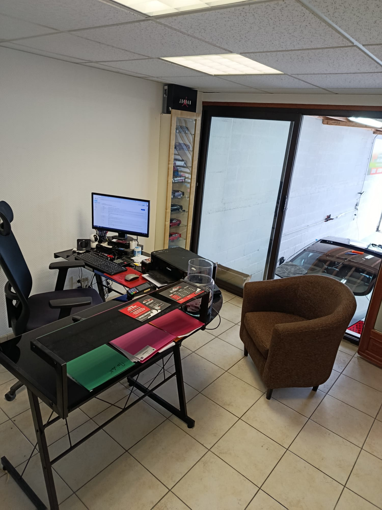
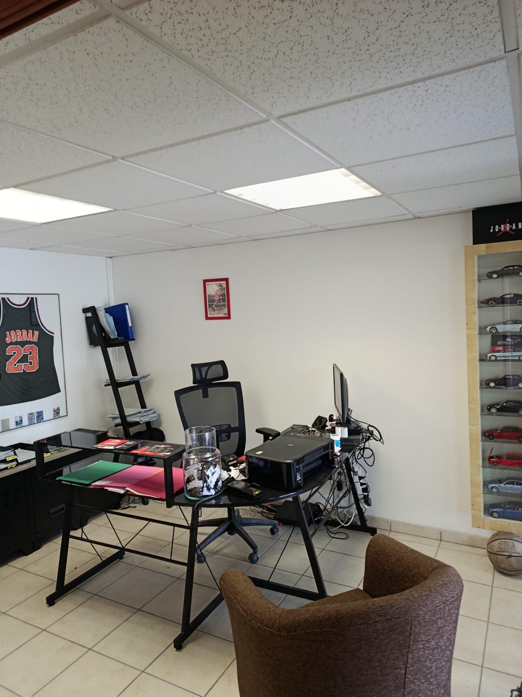
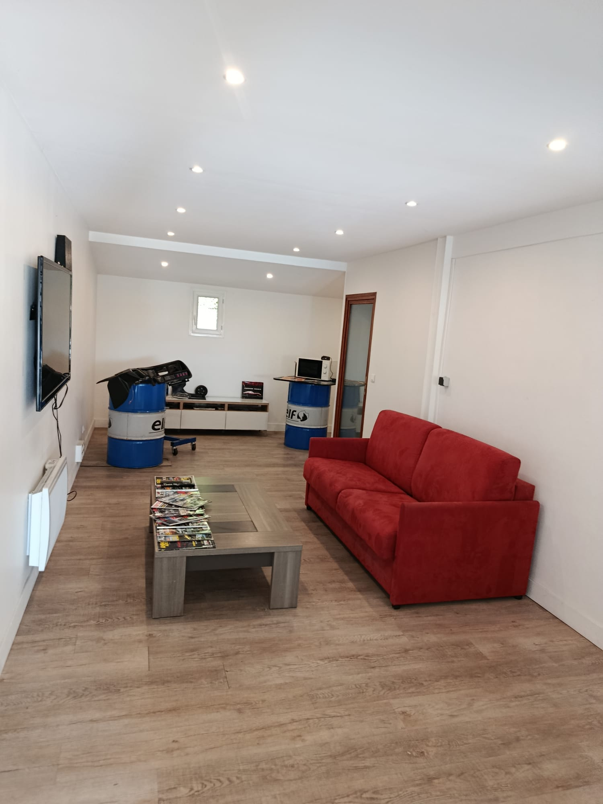

Vérification de votre assurance
Analyse de votre dossier et de votre couverture selon votre contrat d'assurance.
Administratif & Assurance
Fast Detailing vous accompagne dans les démarches d'assurance et la gestion de votre dossier bris de glace.


Accueil client
Pendant l'intervention sur votre véhicule, profitez d'un espace d'accueil confortable et d'un accompagnement personnalisé.
Démarches
Notre équipe vous accompagne à chaque étape pour votre assurance bris de glace, avec une approche claire et transparente.

Analyse de votre dossier et de votre couverture selon votre contrat d'assurance.
Préparation des informations utiles et suivi de la demande de prise en charge assurance.
Explications simples des étapes à prévoir et des documents utiles.
Lecture des conditions de franchise pare-brise et solutions possibles selon contrat.
Un interlocuteur local pour vous tenir informé avant, pendant et après intervention.
Détail clair des étapes, prise en charge possible et rappel des conditions.
Étapes
Un parcours simple pour votre remplacement pare-brise et votre prise en charge assurance.
Téléphone, formulaire ou WhatsApp selon votre préférence.
Vérification des modalités de votre assurance bris de glace et de la franchise pare-brise.
Réparation ou remplacement pare-brise planifié selon disponibilités et état du vitrage.
Dossier suivi et conseils de fin d'intervention pour repartir sereinement.
Confiance locale
Notre équipe vous accompagne avant, pendant et après l'intervention afin de simplifier vos démarches et vous faire gagner du temps.
Info locale
Fast Detailing à Gisors accompagne ses clients pour le remplacement et la réparation de pare-brise ainsi que les démarches administratives liées au bris de glace et aux assurances. Notre équipe vous renseigne sur la prise en charge assurance, la franchise pare-brise et les options possibles selon votre dossier pour un remplacement pare-brise à Gisors réalisé en toute clarté.